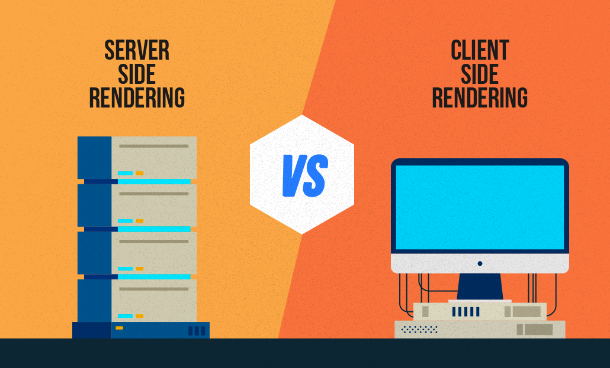

<div class="pt-5">
    <section class="section">
        <div class="container">
            <h1 class="title">Server Side Rendering</h1>
            <div class="columns">
                <div class="column is-half">
                    <div class="block">
                        <p>SSR is the ability of an application to contribute by displaying the web-page on the server
                            <br>instead of rendering it in the browser as client side rendering/CSR.
                            <br>This webpage uses SSR via. Node Express for example.
                            <br>
                        </p>
                    </div>
                    <div class="block">
                        <pre><code>
                    //Example of SSR in Node

        //Helper function for reading pages
    const readPage = (path, title, includeFooter) => {
        const nav = fs.readFileSync('./public/components/nav.html').toString();
        const footer = fs.readFileSync('./public/components/footer.html').toString();
        const page = fs.readFileSync(path).toString();
                
        if (includeFooter === true) {
            return nav.replace("%%TITLE_PLACEHOLDER%%", title) + page + footer;
        } else {
            return nav.replace("%%TITLE_PLACEHOLDER%%", title) + page;
        }
    };
                
        //Serving pages as strings instead of files.
    exports.home = (req, res) => {
        res.send(readPage('./public/pages/home.html', 'Home'));
    };
                        </code></pre>
                    </div>
                    <div class="block">
                        <strong><span>Advantages of SSR:</span></strong>
                        <ul>
                            <li>
                                • Faster loading
                            </li>
                            <li>
                                • Better SEO (search engine optimization), Google loves this.
                            </li>
                            <li>
                                • Assists when loading the page if user has slow internet connection.
                            </li>
                            <li>
                                • Assists when loading the page if user has outdated device.
                            </li>
                        </ul>
                    </div>
                    <div class="block">
                        <strong><span>Disadvantages of SSR:</span></strong>
                        <ul>
                            <li>
                                • Complexity increases as the complexity of app increases
                            </li>
                            <li>
                                • Time consuming to render big applications server side
                            </li>
                        </ul>
                    </div>
                </div>
                <div class="column is-half">
                    <div class="block">
                        <figure class="image">
                            
                        </figure>
                    </div>
                </div>
            </div>
        </div>
    </section>
</div>